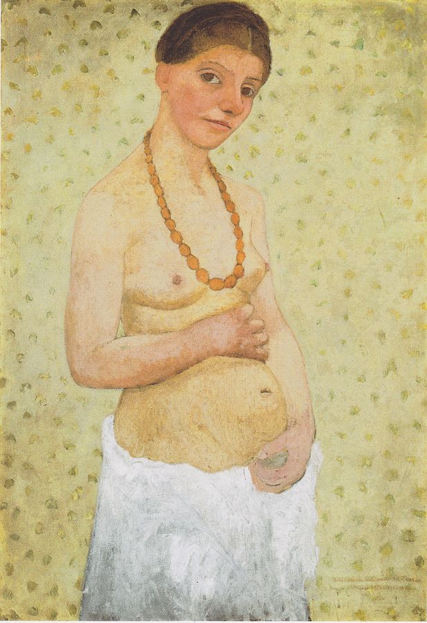

Autoportret
Przed ponad stu laty, 15 maja roku 1906, w paryskim atelier na Montparnasse powstał jeden z najbardziej rewolucyjnych obrazów w historii sztuki — pierwszy w dziejach akt–autoportret namalowany przez kobietę, sygnowany „P.B., w trzydziestym roku życia, w 6. rocznicę ślubu”.
Reprodukcja ze zbiorów Paula-Modersohn-Becker Museum
Malowidło oraz jego sygnatura są z wielu powodów niejednoznaczne. W owym czasie jego autorka, Paula Modersohn-Becker, rozstawszy się ze swym mężem Ottonem Modersohnem, zamieszkała samotnie w Paryżu, chcąc poświęcić się bez reszty własnej sztuce. Umieszczone na obrazie inicjały odnoszą się do jej panieńskiego nazwiska. Niezwykły to zaiste sposób uwiecznienia rocznicy własnego ślubu.
Owego pamiętnego dnia Paula namalowała swój manifest — rezolutnie, a zarazem pytająco spogląda na nas z ram obrazu. Nietypowy format płótna metrowej wysokości świadczy o tym, iż w zamierzeniu nie było to jedynie studium portretu. Tło obrazu nie ukazuje żadnego wnętrza, lecz promienieje cytrynową barwą, przetykaną plamkami zieleni. Kobiece ręce obejmują nagi brzuch. Gest ten często interpretowano jako symbol brzemiennego stanu. Ręce te jednak, w sposób metaforyczny, wskazują raczej na podwójną, elementarną siłę twórczą kobiety i artystki. Ona sama jest źródłem narodzin — zarówno człowieka, jak i — w sensie artystycznym — dzieła sztuki.
Na początku XX wieku było to jednak nie do pomyślenia, by kobieta namalowała własny akt naturalnej wielkości. Aż do tego okresu naga kobieta mogła być modelem, obiektem studiów bądź zmysłową inspiracją dla malarstwa mężczyzn. Paula Modersohn-Becker złamała tę niepisaną regułę. Znalazłszy się na rozdrożu, zmuszona wybierać pomiędzy sztuką a rodziną, między Paryżem a Worpswede, na przełomie wieków, u początku awangardy modernizmu, z pełną świadomością namalowała samą siebie jako nową kobietę — jako artystkę.
Rainer Maria Rilke, najbliższy towarzysz wspólnej artystycznej drogi Pauli Modersohn-Becker w owym paryskim okresie, po swoim szczególnym doświadczeniu i zauroczeniu malarstwem Paula Cézanne’a, docenił wielkość i znaczenie jej dzieła. Pisząc w rok po śmierci Pauli Requiem pamięci przyjaciółki, znalazł słowa oddające siłę i niezwykły charakter jej obrazów:
Ty zresztą rozumiałaś je; owoce.
Sama przed sobą kładłaś je na szali
ważąc ich ciężar barwą, by tak samo,
jak na owoce, patrzeć na kobiety,
na dzieci patrzeć, ze swojego wnętrza
wpędzone w formy przytomnego bytu.
Na siebie samą wreszcie też patrzałaś
niby na owoc, wyłuskując siebie
z ubrania i podnosząc się do lustra,
by się pogrążyć w nim aż po spojrzenie;
ono zaś, nazbyt wielkie, nie mówiło:
jestem tym; ono mówiło: to jest.
(Requiem pamięci przyjaciółki, przeł. A. Pomorski)